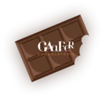

Quiero Café Erechim
Logotipo oficial
Cafeteria na Avenida Sete de Setembro com menu variado de cafés, lanches, doces e pratos.
- Endereço: Av. Sete de Setembro, 425, Sala 01
- Bairro: Centro
- Cidade: Erechim - RS
- Telefone: (54) 99989-8957
Alto Uruguai Gaúcho
Consulte cafeterias, chocolaterias e gelaterias com café no Centro planejado de Erechim, no Alto Uruguai gaúcho.

Conhecida pelo traçado urbano geométrico inspirado em grandes avenidas radiais, Erechim facilita o deslocamento entre praças e ruas centrais. Para quem pesquisa por cafeteria perto de mim na Capital da Amizade, a oferta reúne cafeterias modernas, gelaterias artesanais e casas especializadas em chocolates.
O acesso às cafeterias em Erechim parte naturalmente da Praça da Bandeira, seguindo pela Avenida Sete de Setembro, Avenida Maurício Cardoso, Rua Itália e Rua São Paulo.
Estabelecimentos reais conferidos em fontes públicas em 15/11/2026.
Logotipo oficial
Cafeteria na Avenida Sete de Setembro com menu variado de cafés, lanches, doces e pratos.

Imagem ilustrativa
Cafeteria e gelateria central de Erechim com receitas artesanais de sorvetes, doces e cafés.
Imagem ilustrativa
Localizada na movimentada Avenida Maurício Cardoso, atende com cafés, lanches e confeitaria.
Imagem ilustrativa
Loja e cafeteria especializada em chocolates artesanais de Gramado, fondues e bebidas quentes.

Logotipo oficial
Espaço voltado a chocolates artesanais e cafés na região central de Erechim.
Aviso: Endereços, telefones e horários podem sofrer alterações. Confirme com o estabelecimento ou consulte nossas fontes de verificação.
Áreas de destaque pesquisadas: Centro, Bela Vista, Triângulo. No Centro concentram-se praticamente todas as opções verificadas do município, atendendo tanto quem busca um café rápido durante o expediente comercial quanto famílias em passeios de fim de semana em busca de sorvetes, chocolates quentes e tortas.
No inverno do Alto Uruguai, casas especializadas em chocolate artesanal costumam ter grande procura por bebidas quentes; vale conferir o movimento ou ligar antes em feriados.
A Avenida Sete de Setembro, a Avenida Maurício Cardoso, a Rua Itália e a Rua São Paulo abrigam as casas verificadas neste guia.
Sim, estabelecimentos na Rua São Paulo e na Avenida Sete de Setembro são especializados em chocolates e bebidas quentes.
Sim, na Rua Itália funciona estabelecimento tradicional que combina gelatos artesanais e serviço de café.
Aproveite a facilidade do traçado urbano de Erechim para conhecer cafeterias verificadas e desfrutar de uma boa xícara de café na região.
Explore também guias próximos de café, cappuccino, doces e salgados no estado: